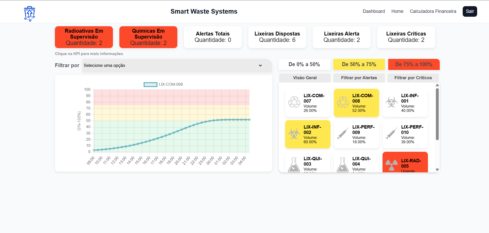
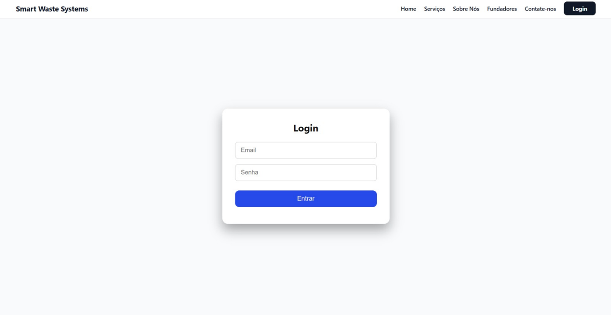
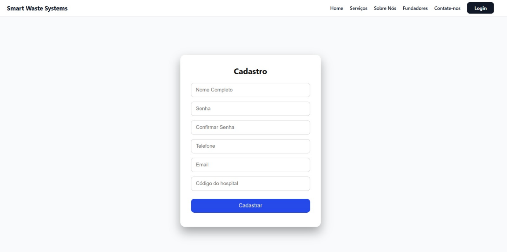
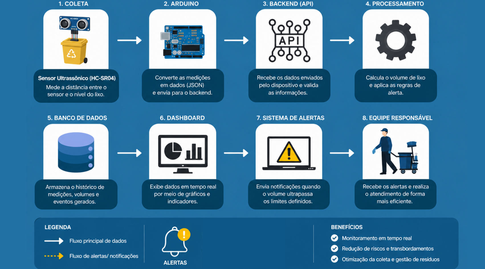

Consultar a situação
Indicadores e uma relação de recipientes reúnem a situação apresentada pelo sistema. Os filtros ajudam a concentrar a consulta em um tipo de resíduo ou estado de atenção.
Estudo de caso · Projeto Integrador · SPTech · 2026
Um projeto acadêmico para acompanhar o preenchimento de recipientes hospitalares e organizar a leitura desses dados em um painel. A proposta combina sensores, software e visualização para apoiar decisões sobre a coleta.

Como tornar visível o nível de preenchimento dos recipientes para apoiar a decisão de solicitar a coleta?
Essa é a questão que orienta o Smart Waste. A documentação do Projeto Integrador, datada de março de 2026, apresenta uma solução para acompanhar o volume de resíduos hospitalares e organizar as informações para os responsáveis.
O recorte adotado foi o monitoramento. O tipo de resíduo é informado manualmente; a medição do preenchimento não identifica o material. A execução da coleta, o transporte e a integração com empresas de destinação ficaram fora do escopo.
O planejamento reuniu requisitos, organização do ambiente, versionamento e definição da arquitetura. A escolha do que acompanhar ajudou a separar as funções do sistema das atividades operacionais de coleta.
A proposta aproxima Arduino e sensor ultrassônico da modelagem dos dados e das interfaces web. A documentação organiza o desenvolvimento em preparação, integração e revisão com testes.
Imprecisão das medições, problemas de conexão e inconsistência dos registros aparecem como riscos do projeto. Esses pontos orientam o que precisa ser observado nas validações da solução.
O painel organiza a consulta por recipiente, tipo de resíduo e situação de alerta.
Indicadores e uma relação de recipientes reúnem a situação apresentada pelo sistema. Os filtros ajudam a concentrar a consulta em um tipo de resíduo ou estado de atenção.
O gráfico apresenta a evolução das leituras. A seleção de uma lixeira permite acompanhar seus registros e observar como o preenchimento varia.
O código inclui rotinas de registro e contagem de alertas. O painel combina essa informação com as faixas de atenção definidas no protótipo.


A aplicação web utiliza Node.js e Express para organizar as rotas, com acesso ao MySQL por meio do mysql2. A interface usa HTML, CSS e JavaScript, enquanto o Chart.js apresenta as leituras graficamente.
O repositório permite acompanhar a consulta de leituras, os filtros, o histórico e o registro de alertas. A proposta de aquisição das medições com Arduino e sensor ultrassônico aparece nos materiais de arquitetura do projeto.
Minha contribuição se concentrou na evolução funcional do dashboard: integração com a API e o MySQL, histórico por recipiente, filtros, gráficos e rotinas de alertas. O painel inicial e outros componentes foram construídos pela equipe.
Os exemplos abaixo mostram parte das minhas contribuições. Também atuei como revisor do código dos colegas da equipe durante o desenvolvimento.
Conectei a interface do dashboard aos dados do MySQL por uma camada específica de rotas, controladores e modelos em Node.js/Express. No cliente, implementei requisições e a montagem dos cartões a partir das respostas da API, incluindo consultas gerais, de alerta e críticas.
Trabalhei em views SQL que separam a leitura mais recente do histórico de cada lixeira. Também conectei a seleção do recipiente à preparação dos valores e horários apresentados no gráfico com Chart.js.
Levei a seleção do tipo de resíduo da interface até a consulta usada pelo gráfico, acrescentando a rota, o controlador e o filtro SQL correspondentes. Assim, a seleção passou a determinar os registros apresentados.
Implementei rotinas de cadastro e contagem de alertas, relacionando as ocorrências às leituras e atualizando o indicador do painel. Também trabalhei nos contadores por tipo de resíduo e na apresentação dos estados definidos no protótipo.


A utilidade de um painel começa na origem da leitura e continua na forma como ela é apresentada.
O Smart Waste conecta decisões sobre medição, associação ao recipiente, armazenamento e consulta. O trabalho também evidencia a importância de definir o escopo e pensar no comportamento do sistema quando uma leitura ou conexão falha.
Como evolução, faz sentido documentar testes de integração física, precisão das medições, atualização dos dados e comportamento dos alertas. A documentação apresenta redução de custos e melhoria da operação como objetivos; o estudo não atribui a esses objetivos resultados medidos.
Base deste estudo: documentação do Projeto Integrador Smart Waste, SPTech, março de 2026, e repositório do projeto (abre em nova aba). As telas de login e cadastro são registros do documento; a captura do dashboard e os dois diagramas foram fornecidos separadamente pelo autor.
No INTEA, o desafio foi pensar em convivência e comunidade. Você também pode explorar esse estudo ou conversar comigo sobre os projetos.